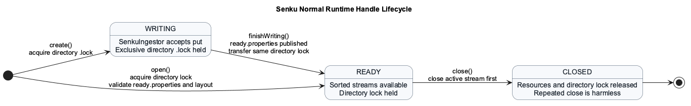
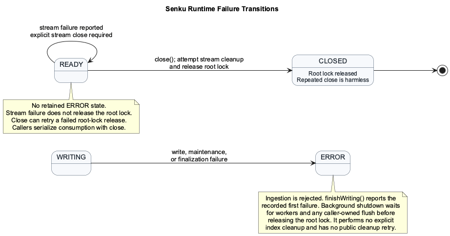
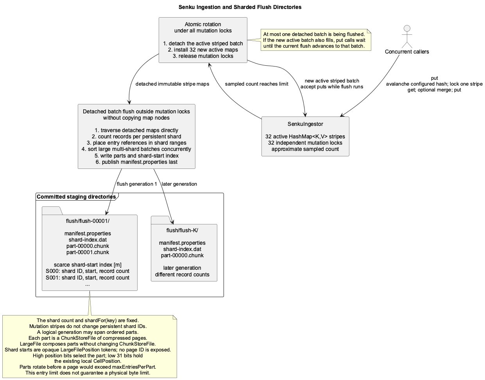
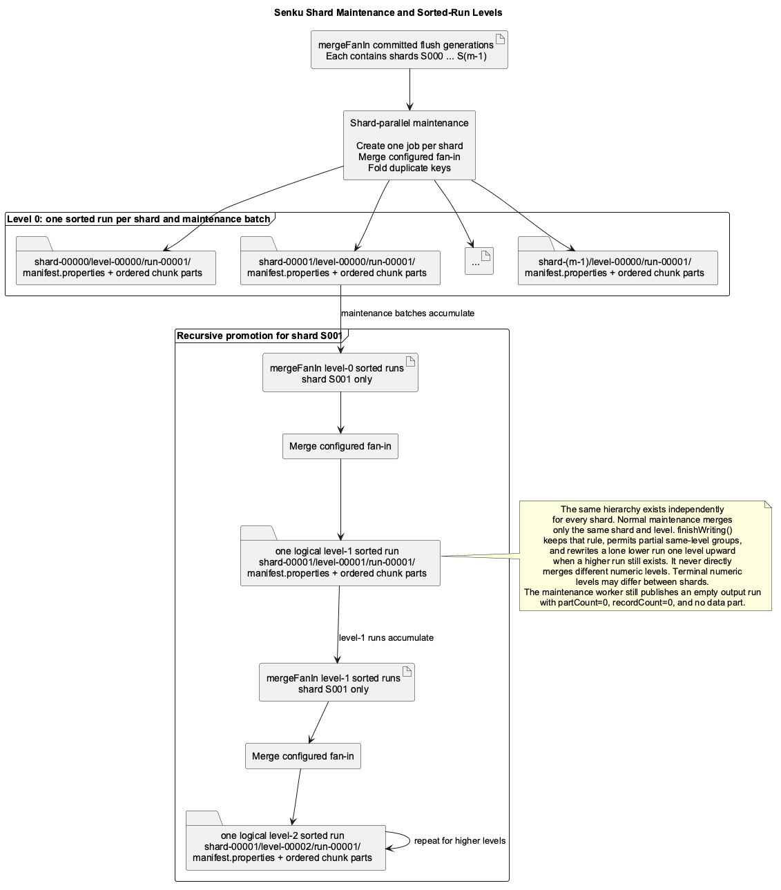
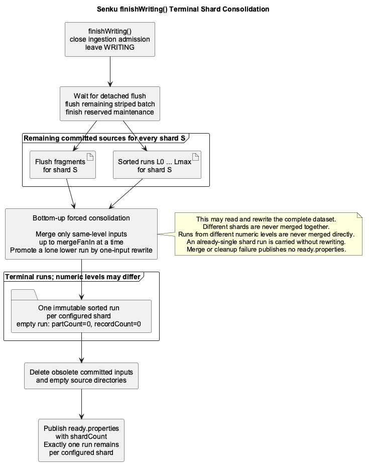
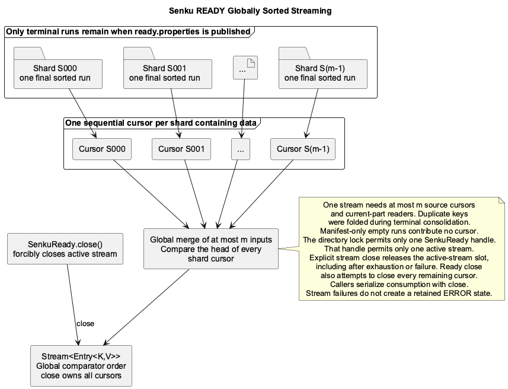
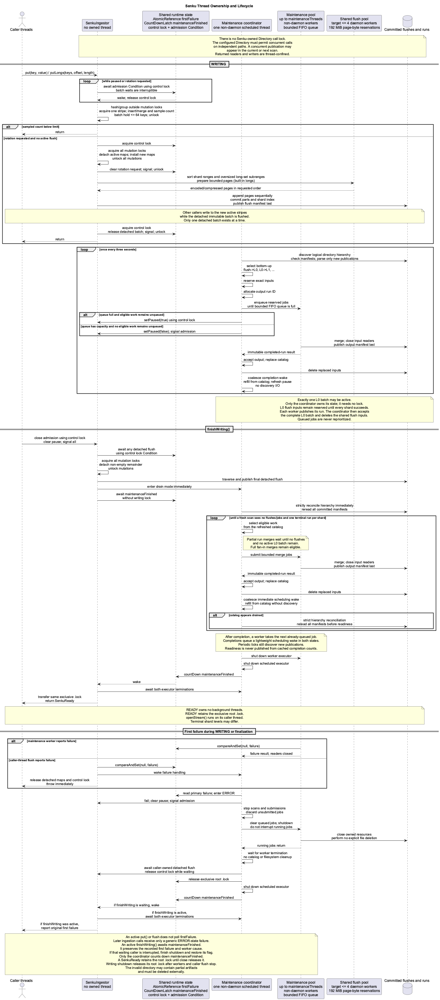

Senku Index
Senku is a write-once, finalize-once, stream-many index optimized for
fast bulk ingestion from concurrent callers. This page describes its implemented
architecture and contracts. Senku has no point-read API and
lives in the separate org.hestiastore.index.senku package. Start with
Bulk Ingestion with Senku for a runnable example.
Primary Goal
Senku prioritizes bulk-ingestion performance. Its API keeps ingestion separate
from finalized reads, and finishWriting() waits for all required maintenance
before transferring ownership to a ready handle. Performance changes must
preserve these public lifecycle, data, and failure contracts.
The primary metric is end-to-end ingest-to-first-sorted-result latency: time from the first accepted write until the first entry of the globally sorted stream is available. This is also called bulk-load time-to-first-result.
The design target is 100_000_000_000_000 numbers; this is not a tested capacity
guarantee. Stored as raw 64-bit values,
that is 800 TB before values, metadata, or redundancy. One sequential pass takes
about 22 hours even at 10 GB/s, so minimizing full-data passes and write
amplification matters more than small API-level optimizations.
User-Facing API
Each lifecycle handle exposes the operations appropriate to its state. The following API excerpt omits Javadoc and method bodies.
public final class SenkuIndex {
public static <K, V> SenkuIndexBuilder<K, V> builder(
Directory directory,
TypeDescriptor<K> keyTypeDescriptor,
TypeDescriptor<V> valueTypeDescriptor,
SenkuMergeFunctionRegistry<K, V> functions);
public static <K, V> SenkuReady<K, V> open(
Directory directory,
TypeDescriptor<K> keyTypeDescriptor,
TypeDescriptor<V> valueTypeDescriptor,
int diskIoBufferSize);
}
public final class SenkuIndexBuilder<K, V> {
public SenkuIndexBuilder<K, V> shardHashFunction(
ToIntFunction<K> shardHashFunction);
public SenkuIndexBuilder<K, V> shardCount(int shardCount);
public SenkuIndexBuilder<K, V> maxInMemoryEntries(
int maxInMemoryEntries);
public SenkuIndexBuilder<K, V> maxKeysPerPage(int maxKeysPerPage);
public SenkuIndexBuilder<K, V> mergeFanIn(int mergeFanIn);
public SenkuIndexBuilder<K, V> maintenanceThreads(
int maintenanceThreads);
public SenkuIndexBuilder<K, V> maintenanceQueueSize(
int maintenanceQueueSize);
public SenkuIndexBuilder<K, V> diskIoBufferSize(
int diskIoBufferSize);
public SenkuIndexBuilder<K, V> maxEntriesPerPart(
long maxEntriesPerPart);
public SenkuIndexBuilder<K, V> keyPageCodec(KeyPageCodec<K> codec);
public SenkuIndexBuilder<K, V> compression(Compression compression);
public SenkuWriting<K, V> create();
public SenkuLongSetWriting createLongSet(LongToIntFunction shardHashFunction);
}
public interface SenkuWriting<K, V> {
void put(K key, V value);
SenkuReady<K, V> finishWriting();
}
public interface SenkuReady<K, V> extends AutoCloseable {
long recordCount();
Optional<SenkuLongKeySummary> longKeySummary();
Stream<Entry<K, V>> openStream();
@Override
void close();
}
SenkuWriting is thread-safe. Puts for different mutation stripes may execute
concurrently; puts for one key always use the same stripe lock and merge
atomically. Operations on different keys or concurrent operations on the same
key have no guaranteed order. Duplicate values for one key are merged rather
than resolved by call order.
For a pure natural-long set, register SenkuMergeFunctions.longSet() and call
createLongSet(LongToIntFunction). The builder requires the exact built-in long
and null descriptors and this explicit reducer. The returned
SenkuLongSetWriting.putLong(long) uses primitive keys, occupancy bits and no
value array. Generic NullValue callbacks do not select set semantics: they
still receive logical keys and execute for duplicates. Both entry points share
the same ingestor, mutation locks, admission, rotation and failure handling.
Generic ingestion searches a stripe table once to insert or merge; resizing
may require a second probe. A failed reducer leaves the prior value unchanged.
SenkuLongSetWriting.putLongs(long[], offset, length) synchronously admits a
primitive slice without retaining or modifying the caller's array. The caller
must not mutate the selected slice until the call returns. The full slice is
validated before mutation; a valid empty slice is a no-op only in WRITING.
The implementation hashes bounded 2,048-key windows outside mutation locks and
groups them by stripe. Each lock hold inserts at most 64 keys and stops early
for rotation; no admission or flush wait holds a mutation stripe. Batch waits
are interruptible and preserve the interrupt flag. A batch is not a transaction:
an operational failure may leave an accepted subset, not necessarily an input
prefix, and follows the same lifecycle failure handling as an individual put.
A concurrent finish can reject remaining keys without undoing accepted keys or
turning an otherwise successful finalization into a rollback.
Single-key puts retain their atomicity; generic reducers have no batch API.
putIfAbsent and conditional replace are intentionally excluded because they
would add state-resolution work.
Lifecycle transitions use a writing lock, while active ingestion uses 128
independent open-addressed mutation tables and locks. openStream() is backed
by a Senku-owned lazy merge implementation rather than materializing the
complete result in memory.
Missing or out-of-range basic builder settings fail with IllegalArgumentException
that names the setting. Unsupported key-codec/descriptor combinations and
compression levels fail with IndexException. create() completes builder
validation before it changes storage. Senku uses IndexException for lifecycle
and persisted-state validation failures. Writing operations and merge iteration
wrap lower-level runtime exceptions with their original cause; user ready-stream
pipeline exceptions propagate unchanged.
Senku follows one failure rule: fail fast. Any detected lifecycle,
ownership, catalog, metadata, storage, merge, or cleanup invariant violation
stops the current operation immediately and is reported as IndexException.
A writing handle moves to ERROR on an operational failure. Ready handles
report failures to the caller without retaining a terminal error state; their
stream ownership rules are described in Sorted Streaming. Senku never silently repairs, skips, retries, or
guesses in order to continue normal processing with inconsistent state.
An API call rejected only because the caller lost a lifecycle race or used a
handle in the wrong state is operation-scoped. It throws IndexException, does
not record firstFailure, and does not change the current handle or index
state. This rule covers a put() that loses the race with finishWriting(), a
losing concurrent finishWriting(), use of a transferred SenkuWriting, a
second active openStream(), and openStream() after CLOSED. Repeated
SenkuReady.close() remains a no-op. A call made after the handle has entered
ERROR because of background maintenance receives a generic state rejection
when calling put(). finishWriting() preserves the recorded first failure
and its cause chain.
The builder is deliberately flat and much smaller than the Segment Index builder. It creates the component graph but contains no runtime monitoring, runtime tuning, or nested configuration sections.
Builder Configuration Summary
The table covers every SenkuIndexBuilder setting. Constructor dependencies
passed to SenkuIndex.builder(...) are also required and must be non-null.
| Setting | Required or default | Accepted value | Failure | Persisted |
|---|---|---|---|---|
keyPageCodec |
Default: KeyPageCodecs.prefix() |
Prefix for any descriptor; longDeltaVarint() or longFixedWeightDeltaVarint(...) for exact TypeDescriptorLong |
IllegalArgumentException for null/invalid domain; IndexException for incompatible descriptor |
Yes, in format.properties and page headers |
compression |
Default: Compression.zstd(3) |
none() or zstd(1..22) |
IllegalArgumentException if null; IndexException for unsupported level |
Yes, in format.properties |
shardHashFunction |
Required for create(); createLongSet(hash) supplies its own primitive hash |
Non-null, deterministic; equal keys must have the same hash | IllegalArgumentException if missing or null |
No |
shardCount |
Required | 1 through 1_000_000 |
IllegalArgumentException if missing or outside the range |
Yes, in ready.properties |
maxInMemoryEntries |
Required | 1 through 805_306_368 |
IllegalArgumentException if missing or outside the ingestion-table range |
No |
mergeFanIn |
Required | Integer greater than or equal to 2 | IllegalArgumentException if missing or outside the range |
No |
maintenanceThreads |
Required | Positive integer | IllegalArgumentException if missing or outside the range |
No |
maxKeysPerPage |
Default: 1_000_000 |
Positive integer | IllegalArgumentException if outside the range |
No |
maxEntriesPerPart |
Default: 10_000_000 |
Positive long greater than or equal to maxKeysPerPage |
IllegalArgumentException if outside the range |
No |
maintenanceQueueSize |
Default: 42 |
Positive integer | IllegalArgumentException if outside the range |
No |
diskIoBufferSize |
Default: 8_192 |
Positive integer divisible by 1,024 | IllegalArgumentException if outside the range |
No; the caller supplies it again to open() |
The builder validates only that the selected shard hash is present. It must be
deterministic and thread-safe, and equal keys must produce the same exact hash,
not merely the same shard ID: ingestion also derives the mutation stripe and
table probe from that hash. This contract cannot be proven from the function
alone. createLongSet(hash) replaces any generic hash configured on the builder
with the primitive function supplied to that call.
The builder has four required performance parameters:
shardCount: from 1 through1_000_000, fixed for the index lifetime.maxInMemoryEntries: the approximate distinct-key count that requests batch rotation; duplicate puts merged into an existing key do not increase it. The sampled count can lag the exact count by less than 25 percent of the limit.mergeFanIn: the normal merge-group size and the maximum number of inputs accepted by one merge job. Finalization may use a smaller same-level group or a one-input promotion as described below.maintenanceThreads: the maximum number of merge jobs that may run in parallel.
diskIoBufferSize is the same storage parameter used by Segment Index. It
defaults to IndexConfigurationDefaults.DEFAULT_DISK_IO_BUFFER_SIZE_BYTES
(8_192 bytes) when creating an index and is used to construct the existing
DataBlockSize. Because Senku does not persist this I/O setting, open() requires
the caller to supply the matching value. A wrong value is not compared against
metadata. It may fail during storage decoding, but Senku cannot promise that it
will be detected before incorrect results are produced.
The optional maxKeysPerPage setting controls the maximum number of sorted
key-value entries in one page and defaults to 1_000_000. It must be positive.
A page closes when it reaches this count or the current shard ends, whichever
happens first. This always bounds entry count; the built-in fixed-width paths
also derive a strict encoded-byte bound from it.
Maintenance page encoding uses one growable contiguous buffer per active job
instead of retaining a byte-sequence object and copied byte array for each
serialized field. The exact built-in Long-key merge paths have a strict
encoded output-buffer bound derived from the configured entry limit: at most
10 bytes per Long/NullValue record and 18 bytes per Long/Long record,
subject to the JVM's maximum safe array size. Other generic value codecs can
emit an application-defined number of bytes, so imposing a smaller byte cap
would reject previously valid values; those paths remain bounded by
maxKeysPerPage and the maximum Java array size.
At most maintenanceThreads jobs allocate merge buffers concurrently; queued
jobs do not open their inputs. Each active fan-in job retains one decoded input
page per source, one output page, compression output, and chunk-store block
buffers. For the fixed-size built-in types this makes the page component
explicitly bounded by approximately
maintenanceThreads * ((mergeFanIn + 1) * maxKeysPerPage * encodedRecordBytes)
before compression and block overhead. Existing files may contain pages written
with an older, larger limit, so operators should size maxKeysPerPage,
mergeFanIn, and maintenanceThreads together rather than treating them as
independent throughput controls.
The optional maxEntriesPerPart setting controls the maximum number of
key-value entries in one physical LargeFile part and defaults to
10_000_000. It must be at least maxKeysPerPage. All four required values and
the shard hash are supplied to create(); the page-key, part-entry, disk-I/O,
and maintenance-queue settings use their defaults when omitted.
The optional maintenanceQueueSize setting bounds submitted merge jobs that
have not started. It defaults to 42. A larger queue can absorb
short scheduling bursts, but does not add I/O parallelism and makes newly
discovered lower-level work wait behind more already-queued jobs. It also delays
queue-saturation backpressure because more jobs can wait before ingestion is
paused.
Builder validation is eager, and each numeric check and capacity calculation is
overflow-safe. shardCount must be from 1 through 1,000,000. At minimum,
maxKeysPerPage, maxEntriesPerPart,
maintenanceThreads, and maintenanceQueueSize must be positive. The page
limit is validated with
Vldtn.requireGreaterThanZero(maxKeysPerPage, "maxKeysPerPage").
maxEntriesPerPart must be at least maxKeysPerPage so one permitted page
always fits within the part's entry limit. maxInMemoryEntries must be from 1
through 805,306,368, mergeFanIn must be at least two, and diskIoBufferSize
must pass the same
Vldtn.requireIoBufferSize(...) rule as Segment Index: positive and divisible
by 1,024. Generic codecs deliberately have no smaller shared heap or encoded
byte budget beyond the worker, fan-in, page-entry, and Java-array limits because
their maximum serialized value size is unknown.
The reproducible senku-merge-encoding JMH profile compares the generic and
primitive-key merge paths and the supported 8, 32, and 128 KiB data-block
sizes. On the reference 100,000-entry in-memory merge, increasing the block
size did not improve latency: 8 KiB measured 2.100 ms/op and 2.206 MB/op,
32 KiB measured 2.105 ms/op and 2.337 MB/op, and 128 KiB measured 2.198 ms/op
and 3.123 MB/op. Therefore the 8 KiB default remains unchanged; larger blocks
increase per-job retained and allocated memory without a demonstrated speed
benefit for this workload. Use JMH's gc profiler for allocation and GC totals
and its JFR profiler when peak heap and phase attribution are required.
Senku does not persist write-path builder configuration, type/comparator
identity, shard hash, or merge-function identity. The one exception is the
structural shardCount stored in ready.properties, which allows open() to
detect an incomplete ready layout. Directory names encode source, shard, level,
and run identity. Every manifest.properties stores its expected physical part
count and acts as the source publication marker. A sorted-run manifest also
stores its exact record count; shard-index.dat contains flush shard positions
and counts.
open() performs no proactive compatibility comparison. It uses the supplied
type descriptors and comparator directly. An incompatible descriptor may fail
while decoding bytes, but no fail-fast detection is guaranteed. A wrong but
byte-compatible descriptor or comparator is more dangerous: it may silently
produce incorrect values or a stream that is not globally ordered. This is an
explicit limitation.
Property files are authoritative. The open() API deliberately does not
receive shardCount; it reads the expected count from ready.properties and
requires exactly one committed terminal run for every shard ID from zero through
shardCount - 1. A missing or extra shard, multiple committed runs for one
shard, a missing or non-empty flush/ directory, temporary file, or unknown
root entry fails fast with IndexException.
Merge Function Registry
Exactly one merge function is configured for a writing index through the
dedicated registry. Creating an index with zero functions or registering a
second function fails with IndexException. No function ID is selected by a
write call or persisted.
@FunctionalInterface
public interface SenkuMergeFunction<K, V> {
V apply(K key, V firstValue, V secondValue);
}
public final class SenkuMergeFunctionRegistry<K, V> {
public SenkuMergeFunctionRegistry<K, V> register(
SenkuMergeFunction<K, V> function);
}
The registry is frozen when the index is created. Senku does not retain mutation
order, so merge functions must be deterministic, associative, and commutative.
Before acquiring the selected mutation-stripe lock, put() validates the
arguments with
Vldtn.requireNonNull(key, "key") and
Vldtn.requireNonNull(value, "value"). A null argument therefore throws
IllegalArgumentException before the map changes and leaves the handle in
WRITING. Senku then probes the selected open-addressed mutation table with an
independently mixed version of the already computed configured hash. A null
result means absent because null values are forbidden, so the supplied value is
stored directly.
Otherwise Senku calls the sole merge function while holding that stripe lock
and stores its result. For
example, three puts for one key cause two logical merge calls, but Senku does
not define their grouping or argument order. A merge function is hot-path code:
it must be fast, non-blocking, allocation-conscious, and isolated from external
state. It must not perform I/O, acquire application locks, invoke remote
services, or depend on call order. The same function may execute on an
ingestion caller or multiple maintenance workers, so it must be thread-safe.
Keys, supplied values, and merge results must be non-null. A merge function that
throws from put() fails that call and moves the index to ERROR. A merge
failure in a maintenance worker is reported only to the coordinator, which
stops new maintenance submission and eventually moves the writing runtime to
ERROR. A running put() or caller-driven flush does not poll for that failure
and may complete before the coordinator closes ingestion admission. A waiting
finishWriting() rethrows the recorded first failure with its original cause
chain. Returning null has the same effect; null is never interpreted as
deletion.
Senku does not interpret TypeDescriptor.getTombstone() and has no tombstone
semantics. A non-null value equal to the descriptor's tombstone is stored,
merged, and streamed as an ordinary value.
Keys, supplied values, and merge results must not be mutated after being passed
to Senku. In addition, key identity must be consistent across the in-memory map,
sorting, and sharding: comparator.compare(a, b) == 0 if and only if
a.equals(b), equal keys must have equal hashCode() values, and
comparator-equal keys must produce the same configured shard hash. The hash must
remain stable for the index lifetime and be safe for concurrent callers. Violating
this contract can create duplicate logical keys or a wrongly ordered result.
When equal key objects from different sources are folded, Senku does not define
which object instance is retained, passed to later merge calls, or emitted.
The key comparator and both type descriptors are shared configuration objects. Maintenance may invoke them concurrently from different shard workers. They must therefore be deterministic and thread-safe, and descriptor methods that create readers, writers, encoders, or decoders must not return mutable runtime state shared between jobs.
Runtime Handle Lifecycle
The runtime handle lifecycle moves forward and never returns to an earlier state:
Normal Transitions

Failure Transitions
WRITING -> ERROR on write, maintenance, or finalization failure
READY -> CLOSED when close() releases the directory lock

CLOSED describes only the runtime handle: it does not establish the integrity
of the persistent index. A ready-stream failure is reported to the caller and
does not move the ready handle to a retained ERROR state. Explicit stream
close is required after exhaustion or failure; closing the ready handle also
closes its active stream. A successful ready close is idempotent. A failed
root-lock release can be retried by calling close() again.
SenkuWriting deliberately has no close() operation and does not implement
AutoCloseable. The API exposes no operation for abandoning a healthy writing
handle.
After any write, flush, merge, cleanup, or finalization failure, Senku makes no
promise that previously written data remains persistent, complete, or reusable.
Senku closes owned resources but performs no coordinated filesystem cleanup.
It does not traverse or delete temporary or other index artifacts. The user must
delete the failed directory externally; it cannot be opened or resumed. Only
successful publication of ready.properties creates a valid index.
WRITINGaccepts mutations and rejects reads.SenkuWritinghas noclose()or abandonment operation. Callers must usefinishWriting().READYallows streams and rejects mutations.- A ready-stream storage or decoding failure is reported at the failing call. Close the stream and handle; the API does not repair damaged persisted data.
- A
SenkuWritinginERRORrejects ingestion and cannot finalize a valid index.finishWriting()reports the recorded first failure. Minimal failure shutdown stops owned work and releases the rootFileLock, but performs no explicit index cleanup. CLOSEDis terminal for the runtime handle.openStream()throws the operation-scopedIndexException; repeatedSenkuReady.close()calls are harmless.
Dropping a healthy SenkuWriting handle without calling finishWriting() is
unsupported. Its non-daemon coordinator and exclusive directory lock remain
owned. Adding explicit destructive abandonment is recorded as technical debt.
Exclusive Directory Lock
create() acquires the exclusive Senku root-directory .lock through the
existing Directory.getLock(...) and FileLock APIs, using the same lock-file
name as Segment Index. The lock covers WRITING,
background maintenance, and finishWriting() finalization, then transfers to
the returned SenkuReady handle without a release gap. open() acquires the
same exclusive lock before returning a ready handle. Both factory paths invoke
the existing FileLock.lock() once and add no pre-check, timeout, retry, or
post-acquisition verification. Contention behavior therefore follows the
backend. The shipped memory and filesystem implementations currently throw when
they consider the lock held, but Senku does not promise immediate failure
because the FileLock contract permits blocking.
The lock is held for the complete WRITING and READY handle lifetime and is
released by successful minimal writing-failure shutdown or
SenkuReady.close(). A failed stream does not release the root lock. Each
release attempt invokes the existing FileLock.unlock() once and adds no
post-release verification. An
observed unlock exception follows the existing lifecycle rules: ready close may
retry, while writing-failure shutdown has no public retry operation. If a
backend returns normally without removing its lock artifact, Senku cannot
detect that failure and treats the lock as released. Consequently, only one
Senku handle and one ready stream can exist for an index directory at a time
within the exclusion guarantees of the Directory backend. The current
filesystem FileLock checks for a lock file and then writes it in two separate
operations, so it does not prove atomic exclusion between racing handles,
whether they are threads or processes. Senku adds no second locking, verification, or recovery mechanism; it uses the
existing FileLock as-is.
Backends that do not implement Directory.getLock(...) are unsupported and
cause create() or open() to fail with IndexException.
Ignoring the backend-owned .lock artifact, create() requires an empty Senku
root and rejects an existing ready marker, committed source, or unknown file.
open() requires ready.properties, reads its structural shardCount, and
validates the complete ready layout before returning a handle. Malformed names,
missing or extra sources, a missing or non-empty flush/ directory, remaining
writing artifacts, and unreadable discovered files fail with IndexException.
SenkuReady implements AutoCloseable; SenkuWriting deliberately does not.
Neither handle implements CloseableResource or extends
AbstractCloseableResource, because that contract requires an already-closed
resource to reject another close() call. A successful finishWriting()
changes the writing handle to an internal transferred state while holding its
ReentrantLock, then hands ready resources and the same directory FileLock
to the new SenkuReady handle. The old writing handle can no longer mutate or
finish the index: both methods throw the operation-scoped IndexException
without affecting the ready handle. It exposes no cleanup operation after
transfer. Repeated SenkuReady.close() is harmless.
finishWriting() blocks until finalization succeeds or fails. Internally it
acquires the lifecycle writing lock, marks finishing as requested, and tells the
ingestor to stop admission. The ingestor wakes waiting puts, waits for any
detached flush, acquires all mutation locks, and detaches and publishes the
remaining active batch when it is non-empty. A put that raced with finalization
either completed before admission closed or fails without mutating the next
batch. Only after the final flush manifest is committed does the runtime
transition to FINISHING and release the lifecycle lock. The coordinator can
then drain all remaining flush
generations into shard runs, consolidate every configured shard to exactly one
terminal sorted run, and publish ready.properties with the structural shard
count. This ordering prevents a periodic coordinator scan from entering drain
mode while the final flush is present but not yet visible through its manifest.
Before any successful readiness decision, the coordinator must observe
FINISHING and reconcile the committed-source hierarchy. A completion callback
cannot use a catalog snapshot from WRITING to establish final drain: a put
may have published another flush after that snapshot. This reconciliation is
required even when the final active batch was empty.
The finalization work can read and rewrite substantial data and therefore
delays the first sorted result. Failure moves the writing handle directly to
ERROR.
The first finishWriting() caller that acquires the lock owns that terminal
attempt. It records that admission is closed before releasing the lock.
Concurrent calls fail immediately with IndexException; they do not join or
wait for the winning attempt, record firstFailure, or change the winning
attempt's state. After a failed finishWriting() leaves the handle in ERROR,
no ingestion or successful finalization is permitted; another finish call
reports the recorded first failure. This requires an internal transition-in-progress
flag, not another public lifecycle state such as PREPARING.
READY is published only after the final data and metadata are committed.
Senku provides no WAL and no recovery or resume mechanism for an
unfinished index. Only a successfully published READY index is considered
valid and openable.
Architecture
SenkuIndexowns lifecycle transitions and the thread-safe public API.SenkuIngestoraccepts all userputcalls duringWRITING, owns one active striped batch and at most one detached batch being flushed. Its per-stripe locks allow concurrent mutation and its control lock protects rotation, lifecycle admission, and flush backpressure.- A completed flush produces one immutable logical directory holding a fixed number of independently sorted, addressable shards.
- The structural
flush/directory is created once bycreate()and retained permanently. Only its individualflush-N/generation directories are removed. - Background maintenance produces immutable sorted-run directories containing one shard at one merge level.
- Each flush or sorted-run directory is one
LargeFile: an ordered set of compressed page parts backed byChunkStoreFile. SenkuMaintenanceCoordinatordiscovers eligible merge groups and a bounded worker pool executes at mostmaintenanceThreadsmerge jobs concurrently. Each worker publishes its completed sorted-run output before reporting completion; only the coordinator changes the source catalog and deletes replaced inputs.- A ready index contains exactly one terminal sorted run for every configured
shard and a published
ready.propertiesmarker. A shard without entries has an empty run. - The merge-function registry supplies the one reduction function used by all duplicate keys.
The write path is:
put
-> SenkuIngestor
-> compute the configured shard hash once
-> independently avalanche it into one of 128 mutation stripes
-> acquire that stripe's lock
-> probe a flat open-addressed table, optionally merge, then store
-> sampled distinct-key count requests rotation
-> acquire every mutation lock and detach the complete active batch
-> install a fresh striped batch and release the mutation locks
-> count persistent shards directly across the detached maps
-> order keys and values into compact shard ranges and sort each range
-> publish one immutable flush generation while new puts continue
Mutation-stripe routing applies an independent avalanche mix to the configured
persistent shard hash before selecting a stripe. Table probing applies a second
independent avalanche so the stripe selector's low bits do not also determine
the initial probe slot. The tables use parallel key, value, and hash arrays,
linear probing, a 0.75 load threshold, and lazy allocation; they neither
allocate one node per entry nor treeify collision chains. Persistent shard IDs
continue to use only the unmodified configured shardHashFunction and
shardCount. Stripe and control locks are non-fair because ingestion
throughput, not waiter ordering, is the goal.
The overflow-safe initial-capacity calculation is divided across the 128 active
tables. With well-distributed configured hashes, their aggregate capacity holds
maxInMemoryEntries at the normal load factor without resizing. An unusually
skewed stripe may still resize. Rotation constructs fresh lazy tables, so their
arrays are allocated only when a stripe first receives an entry; detached
tables retain their arrays only until flush success or terminal failure releases
that batch.
The ingestion table has a maximum table capacity of 2^30. At its normal
0.75 load factor, the largest entry threshold that preserves the no-resize
guarantee is therefore 805,306,368. The builder accepts
maxInMemoryEntries from 1 through that value and calculates the requested
aggregate capacity with long arithmetic before the checked cast to int:
private static final int MAX_IN_MEMORY_ENTRIES = 805_306_368;
long requestedCapacity = (4L * maxInMemoryEntries + 2L) / 3L;
int initialCapacity = (int) requestedCapacity;
Each stripe receives the ceiling of that aggregate request divided by 128, and the table rounds each request to a supported power-of-two capacity. This validation protects the sizing arithmetic; it does not predict available heap. A valid configuration can still fail allocation when the selected entry count or key/value objects exceed the process memory budget.
Striped Rotation and Detached Flush
Each stripe publishes its local distinct-key-count delta only at an interval of
max(1, maxInMemoryEntries / (128 * 4)). One shared atomic aggregate is updated
at that sampling boundary rather than scanning every stripe or incrementing it
on every put. A total at or above the configured limit requests rotation. The
exact batch count can therefore exceed the limit, but the unpublished aggregate
is strictly less than 25 percent of the threshold. The limit counts entries,
not bytes, so the user must size it for the key and value objects in the
dataset.
The caller that claims rotation acquires all mutation locks in a fixed order, detaches the 128 tables, installs 128 fresh lazy tables, resets count sampling, and releases the locks. It then flushes the detached tables on its caller thread. Other callers can immediately mutate the fresh batch. At most one detached batch exists. If the fresh batch also fills, new puts wait until the current flush publishes and the flushing caller detaches the next batch.
SenkuFlushWriter counts entries for every persistent shard directly across
the detached tables and computes the start offset of each shard in a compact
order. Explicit primitive sets retain the configured routing hash in their
existing per-slot hash array; both traversals reuse it instead of invoking the
router again. Table probing still independently mixes that hash. Generic maps
retain their configured callback path. A second traversal places exact built-in Long keys in a primitive
long[]; generic keys use an Object[]; exact NullValue values require no
per-entry array. No full Map.Entry[] or aggregate map is created. Each range
is sorted independently. Exact Long keys avoid object-comparator calls and use
primitive signed ordering compatible with TypeDescriptorLong; generic
descriptors use their comparator through an index-based introsort with a
heapsort fallback.
For a detached batch of at least 8,192 entries, ranges
are sorted on a process-wide daemon fork-join pool with target parallelism at
most four. Oversized primitive long-set ranges are also partitioned within a
single shard by SenkuLongSortTask, so a hot shard does not remain one indivisible
sort task. Three-way in-place partitioning leaves equal keys together, with
bounded JDK leaf sorts and an in-place heap-sort depth fallback. The complete
task tree is joined on failure before the ordering storage is released. Small
batches retain sequential sorting; generic and long/value ranges keep their
existing per-shard sort. For large
batches with exact long keys and exact long or null values, independent page
encoding and compression use that same pool. Generic serializers remain on the
caller thread. SenkuFlushPagePipeline retains at most the configured pool
parallelism in outstanding pages per flush and shares a 192 MiB reservation
budget for Java page working bytes across indexes. Reservations include bounded
buffer growth, input materialization and compressed output; native Zstd contexts
are separately bounded by the worker count. Oversized configured pages are
split to fit the reservation budget. Four one-million-key long/null pages each
reserve 40,004,096 bytes and fit concurrently without changing their page size,
key codec or compression level. This allowance does not cover the ingestion
maps, ordering arrays, total heap or native memory.
The flushing caller alone appends prepared chunks through LargeFileWriterTx,
in shard/page order, and publishes into flush/flush-N/. Prepared chunks carry
the complete compression and magic-number flags and are not compressed again.
On failure, outstanding preparation tasks are joined before releasing their
reservations and detached input maps. Part commit, shard-index commit and final
manifest publication remain ordered on the caller thread.
A page never contains entries from two shards: the writer closes the current
page when it reaches maxKeysPerPage or at every non-empty shard boundary,
whichever comes first. Every page starts with fresh differential-key state so
it can be decoded independently by SingleChunkEntryIterator. Other writing
calls continue against the active maps. Part transactions write
part-N.chunk.tmp and rename it to part-N.chunk on commit. The directory
becomes committed only when its manifest.properties file is published last.
No maintenance thread reads or controls active or detached ingestion maps.
During a flush, memory can contain one active striped batch, one detached
striped batch, compact key/value ordering arrays, and O(shardCount) counts and
offsets. Concurrent range sorting can temporarily retain sort workspaces for
several shards, bounded in aggregate by O(entryCount). Senku creates no
wrapper object per encoded entry. The two detached-map traversals compute the
configured shard hash twice, which avoids retaining one shard ID per entry.
The physical pages store only key and value because the shard-start index
already defines their boundaries.
A failed flush closes its currently owned resources, releases the detached
batch, moves the index to ERROR, and leaves its incomplete output in place. It
does not guarantee preservation of the failed batch, previously committed
sources, or any file. Background maintenance must ignore .tmp files because
they are never valid inputs on the successful path.
Sharded Flush Directories
The configured shard count m is fixed for the lifetime of an index. Every key
is routed to the same shard in every flush generation using:
The hash must remain stable for the writing lifetime. Its equality contract must also match the configured comparator: comparator-equal keys must produce the same hash and therefore reach the same shard.
Every logical flush generation contains all m shard slots. Shards have
variable record counts and may be empty. The example below uses 128 shards.
The generation may use multiple physical parts. Its manifest.properties,
containing partCount, commits the container, while shard-index.dat stores one
addressable region for every configured shard:
shard-index.dat is ordered by shard ID and also stores each ID explicitly so
the reader can require the exact sequence from zero through shardCount - 1.
Pages for one shard are contiguous in the logical LargeFile, and no page
contains records from two shards. A LargeFilePosition is an opaque logical
source position understood only by LargeFile; higher layers never observe a
page ID or its physical part and CellPosition. An empty shard has
recordCount = 0 and its position is ignored. A non-empty shard has a positive
record count and a valid start position. Invalid IDs, counts, or positions fail
with IndexException before shard data is read. This preserves direct access
without scanning earlier shards.
The counting partition makes every shard contiguous, and the independent range sort orders its keys by the configured comparator. Comparator-equal keys must always reach the same shard. A sequence of hash shards is not globally sorted when concatenated; the logical flush generation is a container of independently sorted shard regions.

Sorted Runs and Merge Levels
An immutable SenkuMergeJob is one executable maintenance unit. It names
its exact read-only input source directories and one unique planned output run
directory. Every worker task, whether flush-to-L0, higher-level compaction, or
finalization promotion, uses this same job shape.
An L0 batch is one transient, coordinator-owned unit of work that converts
one fixed group of committed flush generations into one published level-0 run
for every configured shard. It is not a persisted object, a group of user
put() calls, an executable job type, or the executor queue. It logically
requires one SenkuMergeJob per shard and provides the batch barrier required
before its shared flush inputs can be deleted. Jobs are instantiated only as
they become eligible for submission rather than allocating all shard-job
objects in advance. The batch's exact input flush IDs and planned output run
IDs remain reserved until all shard jobs complete and the coordinator either
accepts the complete batch or enters minimal failure shutdown.
When mergeFanIn committed flush generations are available, the maintenance
coordinator reserves their exact source identities as one L0 batch before it
submits any work. The reservation remains active for the complete batch. The
coordinator lazily creates an independent merge job for each shard as submission
capacity becomes available. Each job merges that shard from all inputs, applies
the configured merge function to duplicate keys, and publishes one level-0
sorted run.
Before submitting those jobs, L0 batch preparation validates each input flush's
exact part layout and reads its shard-index.dat exactly once. The resulting
immutable source descriptions and sparse maps contain the contiguous parts and
every shard's start position and record count. A shard job uses those
already-known values to open each flush at the start of its shard and read
exactly that shard's records; it neither relists the source directory nor
reopens shard-index.dat. Because every input shard region is already sorted,
the job performs a streaming k-way merge rather than collecting and sorting the
records again.
Every shard job publishes a run directory, including a shard with zero entries.
An empty run contains only manifest.properties with partCount=0 and
recordCount=0; it has no data part. The immutable worker result is the
batch-completion evidence for every shard, including an empty one. A published
output remains reserved and cannot participate in another merge until the
coordinator processes its result and, for L0, accepts the complete batch.
The coordinator permits exactly one active L0 batch. Only the coordinator thread reads or changes its in-memory state, so the batch needs no lock. Workers receive immutable job descriptions and return immutable completed-run results to that thread. The minimal state is:
final class SenkuL0Batch {
private final long[] inputFlushIds;
private final LargeFile[] inputFlushFiles;
private final long[][] packedStartPositionsByFlushAndShard;
private final long[][] recordCountsByFlushAndShard;
private final long[] outputRunIdsByShard;
private final SenkuCompletedRun[] completedRunsByShard;
private int nextShardToSubmit;
private int completedShardCount;
}
The two primitive matrices are the batch's immutable in-memory sparse maps.
They avoid allocating one metadata object per flush and shard. When a shard job
is instantiated, it reconstructs only that shard's at-most-mergeFanIn
LargeFilePosition values and copies the corresponding counts into its
immutable input description. A zero record count ignores its packed position.
The coordinator submits shard IDs in ascending order. Shard status is derived
rather than stored in another enum: IDs at or above nextShardToSubmit are
pending, lower IDs without a completed result are queued or running, and a
non-null completed result is complete. The runtime-wide firstFailure remains
the only failure holder. On failure, the coordinator discards pending shards
and queued jobs. A job already doing storage work is not interrupted; it closes
its owned readers and writers and returns. Senku failure logic does not delete
its published or incomplete output.
A sorted run is an immutable logical sequence containing sorted entries for
exactly one shard at one level. It is stored in a LargeFile-backed directory.
Example directory names are:
shard-00007/level-00000/run-00001/
shard-00007/level-00000/run-00002/
shard-00007/level-00001/run-00001/
L0 is the first maintenance level; flush generations are staging containers
outside the level hierarchy. The parent directories identify the shard and
level; the final number identifies the run generation. Ordered physical part
names live inside the run directory.
Flush and run generation IDs are non-negative long values. Flush IDs form one
index-wide sequence owned by SenkuIngestor. Run IDs form an independent
sequence within each shard and level, owned by the maintenance coordinator; the
same numeric run ID may therefore appear in another shard or level. Every
sequence increases monotonically from zero.
Every persisted numeric name uses a canonical decimal suffix with a minimum width of five digits and grows naturally beyond five digits:
Flush and run suffixes are parsed as non-negative long values. Shard, level,
and part suffixes are parsed as non-negative int values, and a part must not
exceed Integer.MAX_VALUE - 1. Discovery parses the suffix, range-checks it,
regenerates the canonical name with minimum width five, and requires an exact
string match. It therefore rejects signs, whitespace, missing digits, excessive
leading zeros, and aliases such as run-1 or run-000001. Temporary names are
formed only by appending .tmp to the canonical committed name. Discovery
compares numeric IDs and never relies on lexicographic filename order.
Allocating an ID after its sequence reaches Long.MAX_VALUE fails with
IndexException and moves the writing handle to ERROR.
When a shard accumulates mergeFanIn sorted runs at level L, maintenance
reserves them and merges them into one sorted run at level L + 1. Every level
uses the same configured fan-in. Runs from different shards are never merged
together. Normal maintenance also does not merge different levels. This process
repeats for as many levels as the stored volume requires. Finalization preserves
the same rule: one merge job never consumes runs from different numeric levels.
It may use a partial same-level group or promote a lone run by rewriting it one
level higher so consolidation can continue.
Maintenance workers dynamically consume shard merge jobs. The configured
maintenanceThreads value must be benchmarked against the storage device;
additional threads do not guarantee additional I/O throughput.
Generic maintenance jobs use a PriorityQueue containing one reusable head
node per input cursor. The built-in primitive-long path instead uses
SenkuLongMergeHeap: parallel primitive arrays cache each head's encoded key
and source ordinal. After draining one source's equal-key group, it replaces
the heap root and repairs downward once, rather than removing and reinserting
the cursor. An exhausted source removes the root. Equal keys retain source
ordinal ordering, and arbitrary reducers still receive logical keys; only the
explicit built-in set reducer skips value callbacks. Both paths drain all
equal heads and write one output entry, with O(n log k) selection and O(k)
selector state for n input entries and k sources. No selector object is
allocated per entry. Rank encoding, sampling, page boundaries, compression,
and publication ordering are unchanged.
New run part transactions write part-N.chunk.tmp while incomplete and commit
them as part-N.chunk. A worker counts every output record with overflow-safe
long arithmetic, commits the output parts, closes all input readers, writes
manifest.properties.tmp with the exact partCount and recordCount, renames
it to manifest.properties, and only then returns an immutable completed-run result
to the coordinator. Workers never change the active-source catalog or delete
replaced inputs. Immediately before publishing the manifest, a worker checks
firstFailure; if an error is already recorded, it skips publication, closes
its resources, and returns. Another thread may record the first failure
immediately after that check, so a late published output may remain in the
failed directory.
L0 shard jobs share the same flush directories, so no individual shard job may
delete those inputs. The coordinator waits for every shard result in the batch.
If all shard jobs succeed, it accepts the already-published outputs, replaces
the flush batch in its catalog, deletes the flush inputs, and releases the
output reservations. If any shard job fails, it moves the index to ERROR and
performs no explicit deletion of batch inputs or published or incomplete
outputs; no input or output persistence is guaranteed.
A higher-level merge reserves only its exact same-shard, same-level input runs.
After the worker publishes the output and reports success, the coordinator
replaces the input catalog entries with the output, synchronously deletes every
replaced input file, removes the empty source directories, and finally releases
the reservation. A failed job closes its resources and reports the failure. The
index moves to ERROR and performs no explicit deletion of its input or output
paths; it does not guarantee that any input or output remains usable.
Successful replacement cleanup uses only existing Directory.deleteFile(...)
calls followed by bottom-up Directory.rmdir(...) calls. A missing expected
deletion or any cleanup exception moves the index to ERROR and stops all
further filesystem cleanup. Failed operations, process crashes, and machine
crashes may therefore leave temporary, obsolete, or partially published files.
Such an unfinished index is invalid and must be removed externally.

Final Shard Consolidation and Ready Marker
finishWriting() produces the terminal shard runs and marker required by
READY:
- Acquire the lifecycle writing lock, close ingestion admission, wait for an active detached flush, and flush the remaining striped batch.
- Transition the lifecycle to
FINISHINGand release the lifecycle writing lock after the flush is committed. - Finish already-reserved maintenance work.
- Merge every remaining flush generation into level-0 shard runs, allowing the
last group to contain fewer than
mergeFanIninputs. - For each shard, process levels from lowest to highest. Merge only runs from
the same level, using groups of two through
mergeFanIn, and write each output at the next level. If exactly one run remains at a level while another run exists at a higher level, perform a one-input promotion: rewrite that run alone at the next level. Repeat until exactly one run remains for the shard. Partial groups and singleton promotions become eligible only after no committed flushes and no active L0 batch remain. Full-fan-in run merges may still proceed beside L0 work. This avoids promoting an incomplete visible group immediately before the last L0 batch adds more runs. - Carry an already-single run without rewriting it when no higher-level run exists for that shard.
- Delete every obsolete committed flush generation, non-terminal run, and
empty level or shard directory. Retain the empty structural
flush/directory. - Publish
ready.properties, containingshardCount, last.
Finalization does not scan for or delete unexpected .tmp files. A failure may
leave them in the invalid index directory, and their cleanup is the user's
responsibility.
There is no special physical final/ directory and no common terminal numeric
level. READY requires exactly one committed run per configured shard,
including an empty run for a shard without entries. Those runs may remain at
different levels across shards. Different shards are never merged together.
Within one shard, a lone lower-level run is promoted only when necessary to meet
another run at the same numeric level. This same-level-only rule can perform
more read-and-write passes than directly merging differently leveled runs; the
implementation accepts that cost.
If no put was ever accepted, finalization creates one empty terminal run per configured shard directly; it does not invent a data flush merely to establish the ready layout.
This policy resolves ready-stream source fan-in, but it deliberately moves work
to finishWriting(). Depending on remaining runs, finalization may perform one
or more complete read/write passes and requires temporary space until each
replacement commits and its inputs are deleted. A merge or cleanup failure
publishes no READY marker and moves the handle to ERROR; Senku
does not recover or resume that unfinished index.

Sorted Streaming
SenkuReady.recordCount() sums the exact counts of validated terminal run
manifests with overflow checks. It does not read data pages. Built-in natural
long run writers also collect up to 256 representative logical keys while
emitting their deduplicated output. Positive bucket weights sum to the run's
exact count. The optional versioned summary is published with its run manifest;
input summaries are never propagated across a deduplication merge.
longKeySummary() merges only surviving terminal distributions into at most
4,096 weighted representatives. These are approximate distribution bins, not
exact global-ordinal samples or a membership index; no formal quantile-error
bound is promised. Missing summaries in nonempty old runs produce
Optional.empty(), allowing callers to fall back to scanning. Empty runs need
no summary. Arbitrary descriptors do not enable the natural-long summary path.
Metadata counts and distributions are not a data-integrity audit: they do not
read every chunk, validate all decoded keys, or detect cross-shard duplicates.
Applications requiring readback verification must consume a complete stream
and compare its observed count with recordCount().
open() validates ready.properties and the complete terminal-run layout
before returning SenkuReady. openStream() opens one sequential cursor for
every non-empty terminal run. An empty shard contributes no cursor. Senku
merges those cursors, producing the complete dataset in configured comparator
order. The stream must inspect the head of every cursor
before emitting its first entry. Duplicate keys have already been folded during
shard consolidation.
It uses the reusable-head PriorityQueue pattern of generic maintenance, but does
not invoke the merge function because no duplicate should remain in READY.
Only one ready stream may be active for the exclusively locked index. A second
openStream() call while the first stream is active throws IndexException
without changing the handle. Exhausting a stream may release its input cursors,
but does not release the active-stream slot. Explicitly close every stream,
including after a full scan, a short-circuit operation, or a failed pipeline:
try (Stream<Entry<Long, Long>> entries = ready.openStream()) {
entries.forEach(entry -> consume(entry.getKey(), entry.getValue()));
}
The returned stream is sequential and backed by an unsplittable Senku
Spliterator. Consume it on one caller thread and coordinate that consumption
with stream and ready-handle close: advancing a cursor concurrently with close
is unsupported. Calling parallel() does not provide parallel shard reads.
The ready handle serializes opening and closing streams, but does not acquire
that handle lock for each cursor advance.
If opening the stream fails, Senku attempts to close every opened input. If
reading or merging an entry fails, the iterator attempts to close its remaining
inputs and reports an IndexException, preserving its cause and suppressed
cleanup failures. The caller must still close the stream to release its slot.
A ready handle does not retain a first failure or enter a terminal ERROR
state. After stream close it permits another openStream(), but retrying does
not repair storage or prove that a previous failure was transient.
The spliterator invokes the downstream Consumer outside its internal failure
handling. An exception thrown by user map, filter, forEach, or other
pipeline code propagates unchanged. Java streams do not automatically run close
handlers after a downstream exception or short-circuit operation, which is why
try-with-resources is required.
SenkuReady.close() attempts to close its active iterator, then releases the
root-directory lock even if iterator cleanup failed. It reports failures from
that close attempt; it does not replay an earlier stream failure. If lock
release succeeds, the handle is closed and repeated close is a no-op. If lock
release fails, another close() retries the release. There is no guarantee that
an individual failed cursor close can be retried. Stop consuming before closing
the ready handle, and keep the index directory unchanged while any handle owns
it.
A logical source may span many signed-int-bounded parts, but a sequential
source cursor needs only its current physical part open. One ready stream
therefore needs at most m source cursors and current-part readers.

Senku does not materialize one globally sorted physical run. Hash shards still require the final m-way stream merge. Senku
implements that merge directly with the priority-queue algorithm above;
existing DataFileSorter merge behavior is not a design constraint.
Senku reuses Directory, FileLock, TypeDescriptor, Entry,
ByteSequence, ChunkStoreFile, the Zstd and magic-number chunk filters,
SingleChunkEntryWriterImpl, SingleChunkEntryIterator, IndexException, and
Vldtn. The surrounding flush or merge loop counts entries and closes the
current SingleChunkEntryWriterImpl at maxKeysPerPage; no custom page writer
is needed. Senku owns its ready-stream adapter and handle lifecycle because the
corresponding existing abstractions do not expose the required stream-close and
ownership-transfer contracts. Shared page writers and readers accept a matched
KeyPageCodec, while their existing constructors retain prefix encoding.
CloseableResource and AbstractCloseableResource may still be reused by
internal resources whose lifecycle matches their exact contract, but not by the
idempotently closed SenkuReady handle. SenkuWriting is not closeable. Senku
must still close each reused inner resource exactly once.
Senku composes Directory, ChunkStoreFile, ChunkStoreWriter,
ChunkStoreReader, CellPosition, and DataBlockPosition through their public
contracts. Senku-specific ingestion and lifecycle orchestration remain in the
Senku package; shared codec behavior stays in the storage components.
SortedDataFile and UnsortedDataFile are single-physical-file abstractions and
do not fit the page-part layout directly. DataFileSorter is also a complete
sorting workflow rather than a low-level building block. The existing
MergedEntryIterator linearly scans all inputs, and allocates helper objects,
for every emitted key. Senku uses its own priority-queue or specialized primitive-heap merge so the
head selection cost is O(log k). It does not reuse segmentindex routing,
monitoring, maintenance, or lifecycle orchestration.
Performance Constraints
- The public object-based
put()remains unchanged, but the mutation table is a measured flat open-addressed implementation without per-entry nodes. - One hundred twenty-eight mutation stripes allow independent puts to proceed concurrently. A focused sweep must be rerun for materially different worker counts or configured-hash distributions. A duplicate key remains serialized by its one stripe lock.
- Batch rotation briefly acquires every mutation lock. Persistent flush I/O occurs after detachment, while callers populate the next active batch.
- Only one detached batch may flush. A second full active batch applies backpressure until the first flush completes.
- Caller-driven flush consumes CPU and I/O on the caller that claimed rotation.
- Object key/value storage, caller-side boxing, configured hashing, and stripe
locks remain costs even though the table removes
HashMapnodes and tree bins. - The shard count and routing function must remain stable for the lifetime of an index.
- Comparator-equal keys must always route to the same shard.
- Hash shards improve work distribution but require an additional
m-way merge for a globally sorted stream. - Terminal consolidation bounds stream-time source fan-in to one run per configured shard; empty runs contribute no stream cursor.
- Ready cursor advancement does not acquire the handle lock. Callers must serialize consumption with stream and ready close.
- Skewed routing can produce uneven shard sizes and idle maintenance workers.
- Maintenance inputs must be reserved so concurrent jobs cannot merge the same source.
- At most one sorted-run merge per shard may be queued, running, or awaiting completion processing at a time. An L0 shard job may run concurrently with that job because their exact inputs and planned outputs do not overlap.
- Promotion merges
mergeFanInsame-shard, same-level sorted runs instead of rewriting all existing data for every new flush. Every level uses the same fan-in. - Finalization may rewrite substantial data while consolidating each shard and therefore directly increases ingest-to-first-sorted-result latency. It does not merge runs from different numeric levels; a lone lower run may instead be rewritten upward one level at a time. An already-single shard run is not rewritten merely to equalize its level with another shard. Every ready stream then pays only the global shard merge cost.
maintenanceThreadsdepends on storage parallelism. More workers can reduce throughput by competing for the same device.- Producing one L0 sorted-run directory per shard creates exactly
mmanifests and up tomchunk-store parts for every group ofmergeFanInflush generations; file-count and open-file costs must be measured. - Compression may reduce physical I/O and disk consumption, but it does not remove logical merge passes. It helps only when the data compresses enough to repay its CPU cost.
- The Zstd filter materializes byte arrays. Its copy and allocation
cost must be measured at the selected
maxKeysPerPageand the dataset's actual encoded sizes. maxInMemoryEntrieslimits entry count rather than bytes. The same setting can therefore consume very different amounts of memory for different key and value types. It also does not bound peak flush memory: one active batch, one detached batch, and an additionalO(maxInMemoryEntries)ordering-reference array can be live together.- Each active merge worker can retain up to
mergeFanIndecompressed input pages, one output page, selector state, and transient compression arrays. Ready streaming can retain one decompressed page for each non-empty shard.maxKeysPerPagedoes not bound those pages in bytes, so its product with actual encoded entry size, fan-in, worker count, and shard count must be treated as one memory budget rather than tuned independently. - With readers kept open for speed, maintenance can require approximately
maintenanceThreads * (mergeFanIn + 1)current-part file handles, plus metadata handles. A ready stream can require one current-part handle per non-empty shard. Positive configuration values alone therefore do not make a resource-safe configuration. Senku leaves these values free; sizing them for the available heap and process file limit is the caller's responsibility. - Before
READY, Senku provides no durability, crash recovery, or resume guarantee. WAL support is not provided. SenkuWritingis not closeable;finishWriting()is its only supported terminal operation.
Physical File Limit and Splitting
A 4 GiB maximum is not a general operating-system limit. It is the FAT32
maximum file size. Microsoft documents substantially larger limits for NTFS and
exFAT, and Apple documents a 2^63-byte APFS maximum. Java FileChannel uses
long file positions and sizes:
Those filesystem limits are not the effective Senku limit. The existing
ChunkStoreFile stack addresses one physical file with signed-int
CellPosition and DataBlockPosition values. LargeFile deliberately does not
change those classes. Every physical position must therefore remain below
Integer.MAX_VALUE, including block headers, compressed payloads, filter bytes,
and padding.
Hestia's filesystem-backed Directory uses FileChannel and exposes
FileReaderSeekable.seek(long), but that does not remove the lower-level
signed-int constraint. Senku uses a long only as a composite logical address
across physical parts. Senku deliberately does not estimate a physical part's
encoded byte size from configuration. Key size, value size, compression ratio,
chunk framing, and padding make such an estimate data-dependent. The user must
benchmark representative data and configure maxEntriesPerPart accordingly.
Both logical flush generations and non-empty sorted runs have a one-to-many
mapping to ordered physical files. Each logical source is therefore an actual
Directory containing a manifest and zero or more chunk-store parts. Only an
empty sorted run has zero parts. Example non-empty contents are:
Writers rotate only between complete compressed pages. A page that cannot fit
into an otherwise empty part fails with IndexException. Part names are
deterministic and contiguous from zero. Readers parse their numeric suffix,
reject duplicates, gaps, and out-of-range part numbers, and order by that
number rather than by filename text. They expose the parts as one logical page
sequence; the manifest stores the expected contiguous part count. Splitting
happens while flushing or merging and never requires an additional full-data
pass.
The surrounding flush or merge loop supplies each completed page together with
its positive entry count. Before appending a page, LargeFileWriterTx rotates
when the current part is non-empty and adding that page would exceed
maxEntriesPerPart. It then writes the complete page to the new part. Because
builder validation requires maxEntriesPerPart >= maxKeysPerPage, no physical
part exceeds the configured entry limit. Entry counts use long and
overflow-safe addition.
This entry limit is not a byte limit. Senku does not promise that a valid
entry-count configuration stays below the signed-int physical-position wall.
If an entry, page, or part exceeds an existing storage limit, the write fails
with IndexException and the handle moves to ERROR. Lowering
maxKeysPerPage and maxEntriesPerPart reduces the risk for representative
large entries but cannot make one oversized entry valid. No existing writer,
reader, position, or Directory API is changed.
Implementation Details
Package Layout
The public API lives directly in org.hestiastore.index.senku. Implementation
classes use one additional package,
org.hestiastore.index.senku.internal, for storage, ingestion, merge,
maintenance, stream, and lifecycle implementation classes. This keeps the
supported API obvious without creating speculative util, spi, factory,
or one-class component packages. Internal types may be split into narrower
packages later only when their real dependencies show a cohesive boundary.
The root package contains the public SenkuIndex, SenkuIndexBuilder,
SenkuWriting, SenkuLongSetWriting, SenkuReady, SenkuLongKeySummary,
SenkuMergeFunction, SenkuMergeFunctions, and SenkuMergeFunctionRegistry
types. Assembly remains in the builder. The
internal package does not define alternative public API contracts or extension
points.
Unit and integration tests mirror these packages. Unit tests use MemDirectory
for deterministic storage and failure injection. Filesystem integration coverage
uses temporary directories, including SenkuIndexProductionShapeIT,
SenkuFixedWeightCodecIT, and SenkuFinalizationOrderingIT.
Minimal Builder
The builder is one flat object. It validates inputs and constructs Senku components; it does not own index logic or reproduce Segment Index configuration sections.
SenkuMergeFunctionRegistry<Long, Long> functions =
new SenkuMergeFunctionRegistry<>();
functions.register(mergeFunction);
SenkuWriting<Long, Long> writing = SenkuIndex
.builder(directory, keyTypeDescriptor, valueTypeDescriptor, functions)
.shardHashFunction(key -> Long.hashCode(key))
.shardCount(128)
.maxInMemoryEntries(10_000_000)
.maxKeysPerPage(1_000_000)
.mergeFanIn(8)
.maintenanceThreads(8)
.maintenanceQueueSize(8)
.diskIoBufferSize(8_192)
.maxEntriesPerPart(10_000_000L)
.create();
SenkuReady<Long, Long> ready = writing.finishWriting();
Opening an already-ready index bypasses the writing builder and does not require
the merge-function registry or write-path tuning. It does require the same
diskIoBufferSize used at creation because that value is not persisted:
SenkuReady<Long, Long> ready = SenkuIndex.open(
directory, keyTypeDescriptor, valueTypeDescriptor, 8_192);
Example Directory Layout
During WRITING, the root contains disk flush generations produced from the
in-memory map and numeric run levels produced by maintenance. Every shown leaf
is a real file and every flush or run is a real subdirectory opened through
Directory.openSubDirectory(...). Each fixed shard has a shard-N/ directory
directly under the index root. A separate runs/ wrapper would duplicate the
meaning already expressed by the level-N/run-N/ hierarchy.
The shown .lock exists only while the writing or ready handle owns the
directory. It is removed when that handle successfully releases the lock and is
not part of the persistent ready layout.
senku-index/
├── .lock
├── format.properties
├── flush/
│ ├── flush-00042/
│ │ ├── manifest.properties
│ │ ├── shard-index.dat
│ │ ├── part-00000.chunk
│ │ └── part-00001.chunk
│ └── flush-00043/
│ ├── manifest.properties
│ ├── shard-index.dat
│ └── part-00000.chunk
├── shard-00000/
│ ├── level-00000/
│ │ └── run-00019/
│ │ ├── manifest.properties
│ │ └── part-00000.chunk
│ ├── level-00001/
│ │ └── run-00003/
│ │ ├── manifest.properties
│ │ └── part-00000.chunk
│ └── level-00002/
│ └── run-00001/
│ ├── manifest.properties
│ ├── part-00000.chunk
│ └── part-00001.chunk
└── shard-00007/
└── level-00000/
└── run-00021/
├── manifest.properties
└── part-00000.chunk
After finishWriting(), every configured shard has one run. Terminal run levels
may differ between shards because finalization does not equalize their terminal
levels. For example:
senku-index/
├── .lock
├── format.properties
├── ready.properties
├── flush/
├── shard-00000/
│ └── level-00003/
│ └── run-00020/
│ ├── manifest.properties
│ ├── part-00000.chunk
│ └── part-00001.chunk
├── shard-00007/
│ └── level-00001/
│ └── run-00022/
│ ├── manifest.properties
│ └── part-00000.chunk
└── shard-00127/
└── level-00000/
└── run-00023/
└── manifest.properties
shard-00127 illustrates an empty terminal run: its manifest contains
partCount=0 and recordCount=0, acts as the run commit marker, and has no
chunk-store part.
A data writer opens the existing transaction for part-N.chunk and writes
part-N.chunk.tmp. The owner closes that writer and commits the transaction,
which renames the temporary file to part-N.chunk. The source owner then publishes
manifest.properties last: SenkuIngestor owns flush publication and
the maintenance worker executing a merge job owns that sorted run's
publication. Directory cannot rename a directory, so the manifest is the
logical commit marker: a source directory without manifest.properties is
incomplete and is never selected for a merge or a ready stream. A planned
output whose manifest becomes visible before its completion result is processed
remains reserved and cannot be selected for another merge. Obsolete source
files are deleted as soon as their replacement is committed, the coordinator
has processed the completion, and all input readers have closed.
ready.properties is published last at the index root only after cleanup leaves
an empty flush/ directory and exactly one run per configured shard. Senku
relies on the existing Directory
transaction and renameFile(...) operations for logical publication during a
successful process lifetime; it adds no second publication or recovery
mechanism. The Directory contract does not promise an atomic, durable rename,
so the marker protocol is not a crash-consistency guarantee.
The structural flush/ directory is created once during create() and is never
removed. Obsolete flush-N/ generation directories are removed after a
complete L0 batch is accepted, and finishWriting() requires their parent to
be empty before publishing ready.properties. Empty level and shard
directories are removed bottom-up. No obsolete source file or empty level or
shard directory is intentionally retained.
Metadata Files
Senku reads the explicitly supported metadata and key-codec versions and
rejects unknown versions. Terminal manifests without optional long-key summaries
remain readable. No migration or recovery of unfinished indexes is provided.
manifest.properties is the source commit marker. A flush manifest contains
exactly its physical part count:
A sorted-run manifest contains both its physical part count and exact logical record count:
Source kind, generation, shard, level, and run number come from the directory
path. partCount is a non-negative int; zero represents an empty sorted run.
Otherwise, readers require exactly the contiguous files part-00000.chunk
through part-(partCount-1).chunk; a missing or extra part fails fast. Creating
a part that would increase the count beyond Integer.MAX_VALUE fails with
IndexException and moves the writing handle to ERROR. A sorted-run
recordCount is a non-negative long. An empty sorted run requires both counts
to be zero; a non-empty sorted run requires both counts to be positive. A
committed flush always has a positive partCount because Senku never publishes
an empty flush, and the sum of its shard record counts must be positive. A
missing, extra, malformed, negative, or inconsistent manifest property fails
fast with IndexException. The temporary manifest is written through the
existing properties infrastructure and renamed for publication.
Key Page Encoding and Compression
The logical type remains TypeDescriptorLong; no 48-bit board descriptor is
required. For sorted long keys, select:
These types live in org.hestiastore.index.chunkentryfile and
org.hestiastore.index.chunkstore, respectively. The first key in each page is
an eight-byte, big-endian absolute long. Subsequent keys store only the positive
numeric gap, using canonical unsigned LEB128 (seven data bits per byte). Gaps
1 through 127 take one byte; the full signed-long range is supported with up to
ten bytes per gap. Values retain their descriptor encoding and are interleaved
after each key. Every page resets its key state, so page/shard starts remain
independently readable. This is numeric delta encoding, not a three-bit prefix
length. Custom long descriptor subclasses or comparators are rejected in delta
mode rather than silently changing their semantics.
The immutable root format.properties is published before any pages:
For non-negative keys with a known number of set bits and optional binary parity constraints, a rank codec stores each key's ordinal within that domain:
builder.keyPageCodec(KeyPageCodecs.longFixedWeightDeltaVarint(
49, 27, new long[] { 3L }, 0))
.compression(Compression.zstd(3));
Here every key has 27 set bits among its low 49 bits, and the parity of the
bits selected by mask 3L is even. This is a generic integer-domain example,
not a built-in board geometry. A caller supplies the correct domain for its
dataset. bitCount is 1 through 63, setBitCount is 0 through bitCount, and
there are at most eight ordered parity masks within the logical bit width.
Each bit of paritySyndrome specifies the required parity of the corresponding
mask. An empty mask array and syndrome zero select the entire fixed-weight
domain. An empty domain is invalid.
Ranks preserve numeric key order. Ingestion, sharding, generic duplicate reducers and returned entries use logical longs. Primitive maintenance cursors, selector comparisons and page writes retain encoded ranks between identical codec domains, avoiding an unrank/rank pair per record. Domain matching checks bit width, population, ordered parity masks and syndrome, not just codec ID. Arbitrary duplicate reducers receive a lazily decoded logical key; the explicit long-set reducer needs no callback. Run sampling decodes only selected keys. Compressed pages are still decompressed and delta-varints decoded/re-encoded; this is not compressed-blob concatenation. The first rank in each page is eight-byte big-endian; subsequent ranks use canonical unsigned LEB128 gaps. Readers reject ranks outside the domain, and writers reject keys with wrong bit width, set-bit count, or parity. The immutable codec shares a bounded dynamic-programming table across page readers and writers. Rank conversion adds CPU work and must be measured against numeric deltas for the actual data.
The rank codec has ID 4 and persists all four additional domain properties:
formatVersion=2
keyPageCodec=4
compression=zstd
compressionLevel=3
fixedWeightBitCount=49
fixedWeightSetBitCount=27
fixedWeightParityMasks=3
fixedWeightParitySyndrome=0
fixedWeightParityMasks is a comma-separated list of canonical non-negative
decimal longs, or an empty value when no equations are configured. Reopening
reconstructs the complete codec solely from root metadata; it needs no custom
descriptor, callback, registry, or application class. The parameter arrays are
defensively copied. Missing, extra, malformed, or incompatible properties fail
with IndexException; KeyPageCodecs.fromId(4) without parameters also fails.
Domain parameters must remain immutable for the lifetime of the index.
The default key codec is prefix (ID 2); numeric delta-varints use ID 3, and
fixed-weight rank delta-varints use ID 4. Compression
records zstd plus level 1 through 22, or none plus level 0. Chunk flag bit 6
marks Zstd; a compressed result that is not smaller is stored raw. The same
compression choice applies to data pages and shard tables. Reopen reads the
persisted format, so callers do not repeat compression or codec settings.
Unknown or missing format metadata, legacy page version 1, Snappy chunks, and
root/page codec mismatches fail with IndexException. Prefix and numeric-delta
indexes with valid format metadata remain readable. Indexes without that
metadata must be rebuilt in a fresh directory; there is no in-place migration.
Snappy remains available for the unrelated Segment Index implementation.
ready.properties contains exactly the structural count needed to validate the
ready layout. For example:
Its temporary file is written after successful finalization creates exactly one
committed terminal run for every configured shard, then renamed last. A
completely empty index therefore contains one manifest-only terminal run per
configured shard. open() parses a positive shardCount, requires precisely
those shard IDs, and requires exactly one committed run beneath every shard.
Because Directory.openSubDirectory(...) creates a missing directory,
open() first enumerates existing names and opens only those discovered; it
must never manufacture a missing part of the ready layout while reading it.
Together, ready.properties and the terminal run manifests detect a missing or
extra shard, run, or physical part without reading the full dataset. Exact
record-count validation occurs while a run is streamed. The manifests do not
provide a payload checksum; corruption that preserves the record count may fail
only when the affected data is decoded.
shard-index.dat is one existing ChunkStoreFile, not a new raw-file format.
It stores one compressed chunk whose payload is a fixed-order table with one
20-byte, big-endian record per configured shard:
Its write filters are the configured ChunkFilterZstdCompress (omitted for
Compression.none()) followed by ChunkFilterMagicNumberWriting. Its read
filters are ChunkFilterMagicNumberValidation followed by
ChunkFilterZstdDecompress, which also accepts uncompressed fallback chunks. The existing chunk header and filters replace a
custom Senku header, trailer, or checksum format. The shard-index writer passes
SHARD_INDEX_VERSION = 1 to ChunkStoreWriter.writeSequence(...). The reader
requires chunk.getHeader().getVersion() == SHARD_INDEX_VERSION immediately
after reading the single chunk and before parsing any shard record. A mismatch
fails with IndexException. This version identifies only the shard-table
payload layout; it is unrelated to shard level, run ID, or index generation.
The selected filters do not provide a payload checksum. Magic-number validation can reject the wrong format, but it is not a corruption detector. Silent data damage is an accepted limitation unless the filter decision is reopened.
The uncompressed shard table is exactly 20L * shardCount bytes and is
therefore at most 20,000,000 bytes. Builder validation calculates that product
without overflow and requires it to fit in one chunk addressed by the existing
signed-int storage API.
This table is Senku's scarce shard-start index: it records the beginning of each
contiguous shard region rather than indexing every key. The existing
ScarceSegmentIndex<K> is not reused because it is a K -> Integer index backed
by SortedDataFile, while Senku needs fixed shard IDs, packed long positions,
and 64-bit counts. Reusing it would reintroduce the single-file and signed-int
limits that LargeFile is intended to avoid.
The packed position and record count are 64-bit. Empty shards have zero records,
so their position is ignored. Sorted runs contain only one shard and therefore
do not need shard-index.dat; their exact expected record count is stored in
manifest.properties. A sorted-run cursor fails with IndexException if EOF
arrives before that count or if another record exists after the count reaches
zero.
All persisted record counts and runtime count aggregation are non-negative and
use overflow-checking arithmetic; overflow is an IndexException, never a
wrapped negative count.
Publication order is:
- Close every part writer and commit its transaction, renaming
part-N.chunk.tmptopart-N.chunk. - For a flush, rename
shard-index.dat.tmptoshard-index.dat. - Rename
manifest.properties.tmptomanifest.propertiesas the source commit marker.SenkuIngestorperforms this step for a flush, and the maintenance worker performs it for a sorted run. - After all terminal runs are committed, rename
ready.properties.tmptoready.properties.
LargeFile
LargeFile is a concrete Senku-owned composition of multiple existing
ChunkStoreFile instances. It does not virtualize Directory and is not a
replacement for arbitrary files. Directory only locates deterministic
part-N.chunk files. Its contract covers the operations Senku needs:
append compressed pages, return an opaque logical source position, and read
pages sequentially from such a position while crossing physical parts
transparently. It does not assign or expose page IDs.
LargeFile, LargeFileWriterTx, LargeFileReader, and LargeFilePosition are
package-private final implementation classes in the Senku internal package.
They are not public extension points, and no Senku-specific interface is
introduced for their single implementations. Their minimal API shape is:
final class LargeFile {
LargeFileWriterTx openWriterTx();
LargeFileReader openReader();
LargeFileReader openReader(
LargeFilePosition position);
}
final class LargeFileWriterTx {
private static final int SENKU_PAGE_VERSION = 1;
LargeFilePosition appendPage(ByteSequence page, int entryCount);
int commit();
}
final class LargeFileReader
implements Reader<ByteSequence>, AutoCloseable {
@Override
public ByteSequence read();
@Override
public void close();
}
appendPage(...) validates the positive entry count, rotates by
maxEntriesPerPart, hides the version required by
ChunkStoreWriter.writeSequence(...), and supplies the selected key codec ID:
2 for prefix encoding or 3 for long delta-varints. It returns the opaque start
position of the appended page; that position is never a page ID. Each writer
uses one immutable format. LargeFileReader resolves the codec from every page
header and rejects unknown IDs, including legacy version 1. Ready streams also
require each page codec to match the root's persisted choice.
The whole-source openReader() starts at the beginning and reads through every
part declared by the source manifest. It is used for a complete sorted run. The
positioned overload starts at the supplied opaque logical source position and
otherwise has the same sequential behavior. A flush shard cursor uses that
overload and owns the exact recordCount boundary. A sorted-run cursor similarly
owns the manifest's exact recordCount and requires EOF immediately after its
last expected entry. LargeFileReader itself has no shard boundary or record
count.
LargeFileReader.read() returns the next decoded page payload and returns null
at manifest EOF. Once it returns null, it continues returning null. It closes
the current physical reader before moving to the next contiguous part.
close() is idempotent and closes an underlying CloseableResource at most
once; reading after close fails. The class implements the existing
Reader<ByteSequence> contract directly and uses AutoCloseable rather than
CloseableResource, whose repeated-close contract is incompatible with the
Senku wrapper.
LargeFilePosition wraps one non-negative packed long. The high 32 bits below
the sign bit identify the physical part and the low 31 bits contain the
non-negative local CellPosition value:
Its internal encoding is:
final class LargeFilePosition {
private static final int PART_SHIFT = 31;
private static final long MAX_PART_NUMBER = 0xffff_ffffL;
private static final long LOCAL_POSITION_MASK = 0x7fff_ffffL;
private final long packed;
static LargeFilePosition of(long partNumber, int localPosition);
static LargeFilePosition fromPacked(long packed);
long getPacked();
long getPartNumber();
int getLocalPosition();
}
packed = (partNumber << PART_SHIFT)
| (localPosition & LOCAL_POSITION_MASK);
partNumber = packed >>> PART_SHIFT;
localPosition = (int) (packed & LOCAL_POSITION_MASK);
The factory requires partNumber from zero through MAX_PART_NUMBER and a
non-negative localPosition. fromPacked(...) requires a non-negative value
and reconstructs the opaque token read from shard-index.dat; callers never
shift or mask the value themselves. Before opening a positioned reader,
LargeFile also requires the decoded part number to be lower than the source
manifest's partCount. Java has no unsigned int, so the physical
part number is explicitly represented as a long; the local CellPosition
remains an int for the existing ChunkStoreFile API. The sign bit remains
clear, numeric position order follows part order, and the format can address
2^32 parts without exposing a position larger than the existing signed-int
API to a ChunkStoreFile. This packing is private to LargeFile; it is not a
page ID or page number. shard-index.dat persists getPacked() only as an
opaque shard-start token. The API has no byte-level seek,
append-after-commit, truncation, or random mutation.
Although the packed position format can represent 2^32 part numbers, the
first format's signed-int manifest count limits one LargeFile to
Integer.MAX_VALUE parts. Valid part numbers are therefore zero through
Integer.MAX_VALUE - 1, inclusive. The writer checks the count before opening
each new part.
Each physical part is one existing ChunkStoreFile. Writing uses the selected
Zstd filter (or no compressor) followed by ChunkFilterMagicNumberWriting;
reading uses ChunkFilterMagicNumberValidation and ChunkFilterZstdDecompress.
Each page uses SingleChunkEntryWriterImpl with the selected KeyPageCodec;
the surrounding flush or merge loop closes the page at maxKeysPerPage or a
shard boundary. SingleChunkEntryIterator and SenkuLongSourceCursor share the
same page-local LongKeyPageReader on built-in long paths. Generic prefix keys
continue to use DiffKeyReader. Zstd encoding and frame decoding reject
uncompressed pages larger than 256 MiB before allocating a compression or
decompression array; entry-count settings should stay within this byte limit.
For prefix encoding, the reused DiffKeyWriter still validates its own
one-byte differential-key length fields while encoding. This inherited format limit is not builder
configuration. A key that cannot be represented, or data that exceeds another
existing storage limit, fails during flush or merge and moves the writing handle
to ERROR with IndexException.
The writer owns one ChunkStoreWriterTx at a time. It commits a part before
opening the next and never splits one encoded page between parts. Publication
of manifest.properties remains the logical commit for the complete
multi-part source. A reader decodes the part number, passes only the local
CellPosition to ChunkStoreFile.openReader(...), and moves to the next part
at EOF. It closes the previous part first, so each logical source needs only one
physical reader. A flush shard with recordCount = 0 opens no reader. A
non-empty shard cursor opens a positioned reader and decrements the exact
persisted record count while it already decodes entries. Reaching EOF before
zero, or reaching zero while the current page still contains another entry,
fails with IndexException. When zero coincides with the end of the current
page, the cursor closes the reader without requesting the next page. No
additional pass is performed.
A sorted-run cursor uses the same decrementing count, but its expected boundary
is the end of the complete source rather than the start of another shard. After
the last expected entry it therefore checks the remainder of the current page
and requests the next page once, requiring manifest EOF. Any additional entry
or early EOF fails with IndexException; this validation adds no full-data
pass.
LargeFileWriterTx opens its first physical part lazily on the first
appendPage(...). Committing without an appended page creates no part and
returns zero, which supports an empty sorted run. Otherwise,
LargeFileWriterTx.commit() first closes the current ChunkStoreWriter, commits
its ChunkStoreWriterTx, and returns the final non-negative int part count to
the source owner. Previously rotated parts have already been committed, but
remain unpublished because the source manifest does not exist yet. The ingestor
uses that count after writing shard-index.dat; a merge worker uses it to write
and publish its run manifest. Appending after commit fails. ChunkStoreWriterTx
has no close operation: its writer must be closed before commit(), and
violating that contract throws an exception. If writing fails, Senku closes the
active writer if possible, propagates the failure as IndexException, and does
not commit that transaction. It neither deletes the resulting temporary part
nor revisits earlier committed parts.
After commit() returns, later metadata or manifest publication failure leaves
the committed parts in place. A reader remains at EOF once the source is
consumed, and repeated Senku reader close is harmless; every underlying
CloseableResource is closed only once. Senku promises neither rollback nor
persistence of any part or source after failure.
The 10_000_000-entry default is only a starting point. It does not imply a
physical byte size. Users must measure representative encoded keys, values, and
compression. The fixed shard and run directories distribute physical parts,
but part creation, traversal, and the signed-int position wall remain
important benchmark targets.
Thread Ownership and Lifecycle
Senku owns no dedicated ingestion thread. Public ingestion and ready streaming execute on their caller threads. Flush CPU work uses a shared daemon pool; maintenance owns its separate lifecycle-bound non-daemon executors:
| Component | Thread ownership | Lifetime |
|---|---|---|
SenkuIngestor |
No owned thread; single and batched admission, rotation and ordered writes execute on caller threads. Large flushes use a process-wide daemon pool with target parallelism at most four for shard sorting, oversized long-set subranges, and page preparation. | WRITING |
SenkuMaintenanceCoordinator |
One non-daemon scheduled control thread | WRITING through final drain or minimal failure shutdown |
| Maintenance worker pool | Up to maintenanceThreads non-daemon threads, created lazily, with a bounded FIFO work queue |
First submitted merge through final drain or minimal failure shutdown |
| Ready stream | No owned thread; the merge executes on the openStream() caller |
One active stream in READY |
Creation acquires the exclusive root FileLock and constructs 128 active lazy
open-addressed tables, their mutation locks, the ingestion control lock, the
lifecycle writing lock, coordinator, and worker pool before exposing the
WRITING handle. The coordinator starts its three-second schedule only after
initialization succeeds. The index-owned maintenance threads are non-daemon so
their termination is explicit and controllable; the shared flush workers are
daemon threads. A healthy writing handle that is not finished
will keep the JVM alive; this is an accepted limitation.
If create() fails before returning a handle, it cancels any started schedule,
terminates created executors, and releases the root FileLock before throwing.
It does not delete temporary or other index artifacts; if any were created, the
user must remove the failed directory. If open() fails validation or reader
construction after acquiring the lock, it closes opened resources and releases
it without changing persistent files. Cleanup failures are suppressed on the
primary IndexException; neither factory method leaks an owned non-daemon
thread or lock.
Senku lazily creates but does not shut down one process-wide daemon sort pool. Its parallelism is capped at four, it is independent of the JVM common pool, and every detached flush joins all sort tasks before page encoding begins. Concurrent Senku indexes share this bound, preventing each index from multiplying sort-worker memory, but heavy concurrent flushes should still be benchmarked under production load.
Concurrent Directory Access
Senku does not serialize Directory calls and has no locking adapter around the
supplied instance. The supplied Directory must support concurrent method
calls, including listing a directory while another thread creates or publishes
an entry beneath it, and independent operations on files and subdirectories. A
concurrent publication may appear in the current listing or the next one, but
Senku otherwise treats getFileNames() as reliable. It does not require one
atomic view of the complete tree.
Each returned reader or writer is owned by one thread, and no reader or writer
instance is shared between threads. Workers publish distinct planned run paths.
Published sources are immutable, an incomplete source has no
manifest.properties, and reservations prevent a source or planned output from
being scheduled twice. The coordinator alone deletes replaced inputs, after
the affected workers have closed their readers. Minimal failure shutdown starts
no new scan or merge work and deletes nothing.
While creating a reservation, the single coordinator thread creates the whole planned output path, including any missing shard, level, and run directories, before submitting the job. The worker writes only inside that unique, pre-created run leaf. Concurrent workers may use different leaves in the same shard tree, but only the coordinator creates or removes their shared parent directories. It does not remove a parent while the catalog or a reservation still owns a child. No filesystem-level synchronization is added.
The exclusive root .lock still prevents another Senku handle from using the
same index. It does not serialize the ingestor, coordinator, and workers inside
that handle. Waiting for an extra flush generation is unnecessary because
manifest.properties publication already separates incomplete and committed
inputs.
During normal writing, SenkuIngestor publishes sampled deltas from the 128
stripe sizes into one atomic aggregate and requests rotation at the approximate
threshold. Its control lock owns a Condition used
for maintenance and rotation backpressure. A put() waits on that condition
before taking its mutation-stripe lock while ingestion is paused or a full
active batch cannot yet rotate; waiting releases the control lock. The caller
that claims rotation detaches the active maps under all mutation locks and then
performs the complete flush without holding those locks. It does not notify the
coordinator. The coordinator wakes on its next three-second interval and scans
the logical directory hierarchy for committed sources.
Maintenance workers merge their reserved file sources, publish their output
runs, and return immutable completion results. The coordinator changes catalog
membership and eagerly deletes replaced inputs using the L0 batch barrier
described above.
finishWriting() acquires the lifecycle writing lock and asks
SenkuIngestor to close admission, clear any backpressure pause, wake waiting
puts, wait for a detached flush, and publish the remaining active batch. The
lifecycle stays WRITING during that publication, but the ingestor rejects
awakened or newly arriving puts. After the committed flush manifest is visible,
finishWriting() changes the lifecycle to FINISHING, releases the lock,
wakes the coordinator immediately, and switches it to drain mode. Drain mode
bypasses the normal three-second delay and starts with a strict reconciliation
that rereads every committed manifest. In both WRITING and FINISHING, job
completions process their results, release their reservations, and request a
coalesced scheduling pass from the coordinator-owned catalog. This pass refills
capacity and refreshes backpressure without discovering files. A periodic tick
still discovers newly published sources. When the catalog suggests that drain
is complete, the coordinator strictly rereads the hierarchy and all committed
manifests again before allowing readiness. A completion never establishes
readiness from cached counts alone. An available worker also takes the next job
already in the executor queue.
The coordinator and worker pool stop
before the SenkuReady handle is returned; READY owns no background threads.
The same exclusive root FileLock transfers to that handle without being
released.
Every writing runtime owns one CountDownLatch maintenanceFinished, initialized
to one. The code waiting in finishWriting() runs on the user caller thread
after the final ingestion flush; the ingestor owns no thread.
Maintenance workers only return results or record firstFailure; they never
complete the latch. SenkuMaintenanceCoordinator is its sole completer and
calls countDown() once as its final control action after the terminal outcome
is fixed and no worker remains active. On success it does not unlock or
reacquire the root FileLock; finishWriting() transfers that same lock to the
returned SenkuReady handle, which retains it until close(). On failure the
coordinator attempts the exceptional lock release before completing the latch.
A finishWriting() caller waits for both maintenance executors to terminate,
then checks whether finalization succeeded. A failed drain rethrows the recorded
first IndexException without replacing its cause chain. A background failure
with no waiting caller still performs minimal thread shutdown and completes the
latch.
put() and its detached flush path never read firstFailure and never wait on
maintenanceFinished. A stripe mutation or detached flush already in progress
may complete while a background failure moves the runtime to ERROR and closes
ingestion admission. Later calls are rejected by the generic lifecycle state
check. This deliberately permits in-flight data to be published after a
background job has failed.
finishWriting() waits uninterruptibly to completion because returning early
could orphan non-daemon threads or transfer an index whose outcome is unknown.
SenkuReady.close() likewise completes its bounded resource shutdown before
returning. Senku records an InterruptedException, continues waiting, and
restores the caller's interrupt flag before returning or throwing. Interruption
is not itself an index failure and never interrupts a maintenance worker.
Writing Failure Coordination and Minimal Shutdown
Every Senku writing runtime owns one AtomicReference<IndexException> named
firstFailure. The first reporter whose compareAndSet(null, failure) succeeds
defines the primary failure. This means first successfully recorded, not
necessarily first by wall-clock time, which cannot be established reliably
across threads. Once the reference is non-null, the runtime is treated as
ERROR.
The outer runnable for every periodic scan, completion callback, and merge job
catches Exception, converts it to IndexException, and reports it through
this same reference. It does not catch Throwable. This is required because an
uncaught exception from a scheduled task would otherwise silently suppress its
future executions. On the healthy path, every successful merge job posts one
immutable completion result. After ERROR, job completion messages and catalog
reconciliation are unnecessary because the index will never resume.
Failure shutdown follows this order:
- The first reporter records the primary failure for coordinator use and wakes
the coordinator. It acquires the lifecycle writing lock, moves the runtime
to
ERROR, tells the ingestor to close admission and clearpaused, and signals callers waiting oningestionMayProceed. A detached flush already in progress finishes or reports its own failure. Later exceptions never replace the internally retained failure. - A caller-thread
put()or flush failure is thrown back to that same caller. A background failure is never injected into an active or later ingestion caller; later calls receive only the genericERRORlifecycle rejection. - The coordinator stops periodic scans and new submissions, discards its
unsubmitted jobs, clears the bounded worker queue, and calls
workerExecutor.shutdown(). A task concurrently taken from the queue checksfirstFailure, performs no storage work, and returns. - Already-running storage jobs are not cancelled or interrupted. They close
their owned readers and writers and return without publishing further output
after observing
ERROR. Senku performs no explicit deletion of temporary, published, obsolete, or input files. An activeChunkStoreWriteris closed, but itsChunkStoreWriterTxis not committed or closed. A late publication racing with the first failure may remain in the failed directory. - The coordinator waits until the worker executor terminates and any
caller-owned detached flush has completed. Waiting for that flush releases
the ingestion control lock so its owner can finish. It performs no catalog
reconciliation or filesystem cleanup during these waits. Only then does it
invoke
FileLock.unlock(), shut down its scheduled executor, and count downmaintenanceFinished. - A
finishWriting()caller that had already begun the terminal operation waits for this shutdown without holding the writingReentrantLock, then rethrows the recorded firstIndexExceptionwith its original cause chain. A later finish call also reports the recorded failure; a later put receives only the generic lifecycle rejection. - Senku performs no filesystem traversal or explicit deletion. Artifacts may remain in any partially completed state, so the directory is invalid and must be deleted externally before reuse. An observed worker-shutdown or root-lock-release failure is retained on the primary failure. The writing API has no public cleanup retry operation.
This minimal shutdown applies only to SenkuWriting. SenkuReady owns no
maintenance threads; its stream and close failure behavior remains defined in
the Sorted Streaming section. Unexpected executor or worker cancellation
records an IndexException and enters the same minimal writing shutdown.

Maintenance Scheduling
SenkuMaintenanceCoordinator owns one scheduled control thread and a fixed
worker pool of maintenanceThreads. During ordinary WRITING, it checks
eligible committed files with scheduleWithFixedDelay(...), waiting three
seconds after each scan rather than trying to catch up missed ticks. It receives
no immediate signal from SenkuIngestor and has no reference to the in-memory
map. It calls SenkuIngestor.setPaused(...), which briefly uses the ingestion
control lock to update paused and signal ingestionMayProceed.
The worker pool is a JDK ThreadPoolExecutor with equal core and maximum
sizes, an ArrayBlockingQueue of maintenanceQueueSize, and the Senku
non-daemon thread factory. Workers are created lazily. The queue contains
reserved jobs waiting to start and preserves FIFO order. It is not reprioritized
after submission. The rejection handler waits only for a queue slot already
admitted by the coordinator, avoiding the executor's transient worker-handoff
race. Shutdown or interrupted submission is an IndexException
and triggers normal first-failure shutdown.
Every periodic scan traverses only the logical Senku directory hierarchy: the
root, flush generations, shards, levels, and runs. It uses getFileNames() only
on structural parent directories to discover their child directories. At a
flush or run directory it checks the exact manifest.properties name with
isFileExists(...). SenkuMetadataDiscovery reads a newly committed properties
file once and reuses its immutable parsed metadata on later periodic scans.
The cache is coordinator-confined and bounded by live sources: successful
worker results seed it, successful input deletion evicts entries, and a
successful reconciliation replaces it with the current observation. Failed
observations never replace the cache, and incomplete publications are not
negatively cached. It never calls
getFileNames() on a source directory, enumerates part-N.chunk, opens a data
part, or reads shard-index.dat during the scan. After a flush group is
selected, L0 batch preparation validates each selected flush's part layout and
sparse index once before submitting shard jobs. A selected higher-level merge
worker performs complete run validation when it opens its inputs;
SenkuIndex.open() does the same for terminal runs. Temporary files are never
valid inputs. Structural directory traversal and manifest-existence checks
still happen every three seconds and must be benchmarked as directory count
grows; repeated parsing and copying of known run summaries do not.
Property files remain authoritative during reconciliation. A newly discovered
committed source is added to the catalog unless its ID is a reserved planned
output still awaiting completion processing; that source remains reserved and
unschedulable. A source directory without a published manifest is ignored as
incomplete. A committed source already known or reserved by the coordinator but
missing from disk fails discovery with IndexException and moves the writing
handle to ERROR. Published metadata is immutable under the writing handle's
exclusive ownership; external content mutation during writing is unsupported.
Strict reconciliation rereads even cached manifests and rejects changed counts
or summaries. It runs before the first drain scheduling pass and again before
the successful readiness decision, including when finalization has no tail
flush. The coordinator trusts the structural directory listing and performs
no additional listing recheck. It does not repair, reconstruct, or silently
skip inconsistent state.
The active-source catalog is the coordinator's in-memory view of committed flush and sorted-run directories; it is not another persisted file. The coordinator is its sole owner, together with reserved source IDs, planned output IDs, and in-flight job reservations. Workers communicate only by publishing their planned output and returning an immutable completion result. Completion handling is submitted back to the coordinator's single-thread executor, so periodic scans and completions are serialized without a catalog lock. If a scan observes a published planned output before its completion result, the coordinator recognizes its reserved output ID and does not schedule it.
The same ownership applies to the single active L0 batch. A later eligible flush group remains an unreserved on-disk backlog until the current L0 batch is accepted or fails. Higher-level jobs for other shards may still use otherwise available worker capacity.
The coordinator-owned set of shard IDs with an active sorted-run merge prevents two such merges for one shard from being queued or running together. L0 jobs do not use that no-go set: an L0 job may run beside an older sorted-run merge for the same shard because it reads flush inputs and writes a unique level-0 run, while the other job reads reserved sorted runs and writes another unique planned run. Exact input source IDs and both planned output IDs remain reserved through worker publication, completion processing, catalog replacement, and input cleanup. L0 jobs may read the same flush directories because every such job processes a different shard. The coordinator does not inspect worker threads or compare task-object identities. It allocates an output run ID unique within its destination shard and level and creates its directory path before submission.
The executor queue is not the complete maintenance backlog. Immutable committed sources and coordinator-owned pending L0 batch state are the on-disk backlog. After discovery and after a coalesced completion wake, the coordinator:
- Continues the remaining shard jobs of an already-started L0 batch first, so its shared flush inputs can eventually be deleted.
- Orders new eligible work by ascending output level: flush-to-L0 first, L0-to-L1 second, L1-to-L2 next, and so on. Within one output level it chooses shards by ascending shard ID and the oldest run IDs within each shard and level for deterministic progress.
- Reserves the exact input IDs and planned output ID before submission.
- Enqueues jobs until all worker and queue capacity is occupied. The maximum is
maintenanceThreadsrunning jobs plusmaintenanceQueueSizenot-yet-started jobs. Once enqueued, jobs remain FIFO and are not reprioritized. If the queue is full while eligible work remains unqueued, the coordinator pauses ingestion as described below. - Receives a worker result only after the worker has closed its input readers and published its output run.
- Accepts the published output, replaces the catalog entries, deletes every
obsolete input file and empty input directory, and releases the reservation.
It does not submit newly eligible work inline. An available worker takes the
next job already in the executor queue. Completions coalesce into at most one
pending immediate scheduling wake, which refills from the catalog in both
WRITINGandFINISHINGwithout a directory scan. New flush publications remain discoverable on the next periodic tick. - On failure, enters minimal writing shutdown without deleting any source or output path and without resubmitting the reservation.
The coordinator must never submit one task for every shard, run, or level at once. An L0 batch therefore keeps shard jobs that do not fit in the bounded executor queue in coordinator-owned pending state. Its flush source IDs remain reserved until all shard jobs and batch cleanup complete.
Strict bottom-up selection deliberately has no fairness rule. Sustained flush-to-L0 work can therefore starve higher-level compaction and increase disk consumption. The queue bound limits only submitted in-memory work; it neither bounds committed sources on disk nor fixes that starvation risk.
During finishWriting(), the same coordinator enters drain mode. Drain mode may
reserve a partial flush group. Partial same-level run groups and singleton
promotions wait until all committed flushes and the active L0 batch are gone.
Full-fan-in compactions remain eligible while L0 jobs are active. Drain never
merges runs from different numeric levels. A lone run is promoted by a one-input
rewrite when a higher-level run still exists. Every job still respects
mergeFanIn and maintenanceThreads. Drain completes only after a scan that
observed FINISHING has reconciled all committed sources, no flushes or
submitted jobs remain, and the catalog contains one terminal source per
configured shard. Numeric terminal levels may differ between shards. Already
queued ticks become no-ops once the runtime has terminalized.
Ingestion Backpressure
Ingestion uses one shared boolean paused and one Condition
ingestionMayProceed, both guarded by the ingestion control lock.
SenkuIngestor never inspects the executor. Before taking its mutation-stripe
lock, put() waits with awaitUninterruptibly() while ingestion is paused or a
full batch awaits rotation, releasing the control lock during the wait and
preserving the caller's interrupt status.
After every logical-hierarchy discovery and coalesced completion wake, the
coordinator fills available worker and queue slots from its known committed
sources. It sets
paused to true only when the bounded queue is full and eligible work
still remains unqueued on disk or in coordinator-owned L0 pending state. Queue
fullness alone is not the high-water condition.
The coordinator clears paused and calls signalAll() only when the
queue has capacity and no eligible work remains unqueued. Queue emptiness alone
is not the low-water condition because workers may still be active and more
eligible sources may remain on disk. The coordinator changes the flag only
after completing its catalog and scheduling work; the callback acquires the
ingestor control lock briefly and performs no storage operation while holding
it. Repeated
observations of the same state do not signal again.
This backpressure bounds throughput imbalance only after the coordinator has
discovered merge-eligible work. The three-second scan interval allows ingestion
to produce additional flushes before a pause begins. Partial groups smaller than
mergeFanIn, numeric file size, free disk space, and bytes temporarily required
for merge output are not represented by queue saturation.
Limitations
maxKeysPerPagelimits entries, not encoded bytes. Senku performs no proactive encoded-size validation. The reusedDiffKeyWriterand storage stack may therefore reject an unrepresentable key, value, page, or part during flush or merge after earlier puts succeeded.- An incorrect flush
recordCountthat differs by complete pages and still ends on a page boundary is not detectable without page-level shard metadata or rehashing every decoded key. This is a current format limitation. - Queue-saturation backpressure does not impose a physical disk-space bound.
- Senku does not serialize
Directorycalls or validate backend concurrency. A custom implementation that cannot list and mutate independent paths concurrently is unsupported.
Technical Debt
- Add an explicit destructive abandonment operation for
SenkuWriting. Until then, every healthy writing handle must reachfinishWriting(); dropping it leaves its non-daemon coordinator and exclusive directory lock owned. The same operation should provide a retry path when minimal failure shutdown or root lock release does not complete. - Add physical-byte debt limits and disk-space reservation before flushes and merges. Queue saturation cannot account for partial merge groups or guarantee enough temporary space to publish output before deleting its inputs.
Possible Improvements
- Replace hash shards with comparator-ordered range shards if measurements show that stream-time global merging costs more than hash balancing saves. Range boundaries would need sampling or another skew-control strategy because the input distribution is not known in advance.
- Move detached-batch publication off the caller thread if benchmarks show that one caller paying the complete flush cost harms producer scheduling.
- Skip forced terminal shard consolidation and lazily merge remaining sources
if measurements show that
finishWriting()latency matters more than bounded stream resources. - Pack small non-empty same-batch shard runs into fewer container files.
- Evaluate additional key encodings and compression levels with the
senku-compressionprofile and representative board data; elapsed time, allocation, and disk bytes all matter.
Related Documentation
- Bulk Ingestion with Senku for application integration.
- Refactor Backlog for completed implementation work.
- Senku implementation issue.